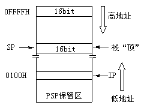

通过图2－4可以看出，整个程序由两层循环构成。内层循环由"LOOP"指令控制完成，外层循环由"JMP"完成。这两层循环有着极大的差别，CPU执行LOOP指令时根据CX减量结果控制转移，这称为条件转移；而执行JMP指令时没有任何条件需要CPU判断。因此，用JMP完成的外层循环是"死"的，没有出口。我们要想返回操作系统，首先要解决"死循环"问题。这是很容易做到的，显而易见，用LOOP指令代替JMP指令，把程序改成PROG1－A那样，外层循环不就"活"了吗？
PROG1－A 0B01:0100 mov cx,800 0B01:0103 in al,61 0B01:0105 xor al,2 0B01:0107 out 61,al 0B01:0109 mov cx,500 0B01:010C loop 10C 0B01:010E loop 103 0B01:0110
真能如我们所想的吗？如果用G命令执行这个新程序，那么后果仍然是"灾难性"的。让我们仔细分析这个程序：
第一条指令在CX中放了一个数字800H作为外层循环的计数值，也就是说CPU在首次执行最后一行的LOOP时CX中应该是800才对。可是不要忘记，程序中还有个内层循环，它同样用到了CX寄存器。事实上在执行到第五条指令时CX寄存器中的800就已经不复存在了。而且退出内循环后CX已经是0，最后一个LOOP指令已经失去了正确的计数值。
看来问题有点棘手，内循环破坏了外循环的计数值，怎么办？
问题并不难解决。很容易想到只要在进入内循环之前把CX寄存器中的数据做个副本，在退出内循环后恢复CX寄存器中的数据就可以了。程序PROG1－B就是依据此想法改进的。我们新增加了两条指令：
助记符：PUSH/POP
用 途：将寄存器或存存储单元中的16位数据压入/弹出"堆栈"
格 式：PUSH/POP 寄存器（16bit）
PUSH/POP 存储器（16bit）
执 行：PUSH指令使"堆栈"中存入了寄存器或存储单元中数据的副本，POP指令会使"堆栈"中最顶端的数据出栈并进入给出的寄存器或存储单元中
"堆栈"是内存中一段连续的存储单元，它主要用于临时存放数据。堆栈在内存中的位置可以是任何一段空闲存储单元，它的段地址由SS寄存器指示，而数据存放的位置由堆栈指针SP寄存器指示。那么堆栈段在应用上与一段存储段有何差别呢？
① 堆栈中保存的数据都是16位的，我们把16位的数据称为"字（WORD）"。8位数据无法用PUSH指令放入堆栈；
② 其次，和程序不一样，堆栈的起始于内存"高地址"位置，这可以通过R命令观察到。进入DEBUG之后使用R命令查看各个寄存器的值，可以看到指令指针IP寄存器指向偏移0100H，而"堆栈指针"SP寄存器则指向0FFEEH。
③ PUSH进栈的数据总是从高地址向低地址方向排列，每执行一次PUSH指令，SP寄存器就会自动减2，同时数据存入SP指向的位置。也就是说，只要不人为修改SP寄存器，那么SP将永远指向最后一个进入堆栈的数据；
④ 和PUSH指令相反，POP指令会把SP寄存器指向的数据取到指定寄存器中，同时SP会自动加2。所以，POP指令总是取出堆栈最后一个数据，即堆栈具有"后进先出"的性质。

PROG1－B 0B1D:0100 MOV CX,0800 0B1D:0103 PUSH CX 0B1D:0104 IN AL,61 0B1D:0106 XOR AL,02 0B1D:0108 OUT 61,AL 0B1D:010A MOV CX,0500 0B1D:010D LOOP 010D 0B1D:010F POP CX 0B1D:0110 LOOP 0103 0B1D:0112
图2－6表示了进入DEBUG后代码和堆栈的位置。为了更好地说明堆栈的特性，我们用DEBUG编一小段程序：
C:\ASM\>DEBUG[Enter] -a100[Enter] 0B01:0100 mov ax,1234 0B01:0103 mov bx,abcd 0B01:0106 push ax 0B01:0107 push bx 0B01:0108 pop ax 0B01:0109 pop bx 0B01:010A [Enter]
输入这些内容
为了能够看到程序执行的细节情况，我们先学习DEBUG的一个新命令--T。T命令主要用于"跟踪"（TRACE）程序，这是DEBUG最重要的功能。利用T命令，我们可以一次执行一条指令，每执行一条指令后DEBUG都会把所有的寄存器内容列出来，这样即可看到指令执行的结果。我们现在跟踪这个程序。